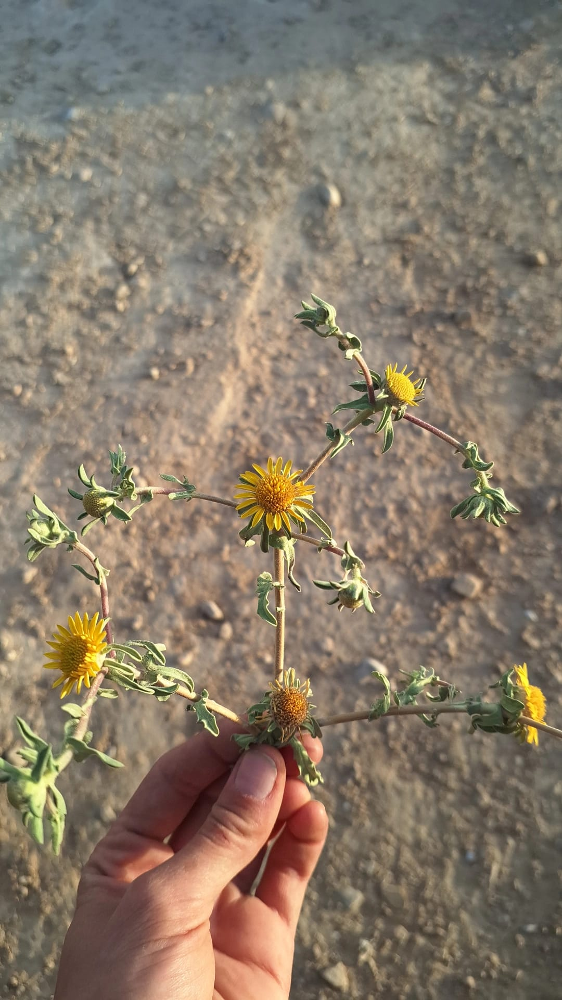

Knowledge from the land and the clinic
Videos
Practical guides and short tutorials on medicinal plants, foraging and making herbal preparations at home, alongside stories about plants, moments outdoors and conversations with people whose work involves nature, wellbeing and traditional crafts.
The videos are in Hebrew, with titles and descriptions in English.
The information in these videos is for educational purposes only and does not replace medical advice, professional diagnosis or treatment.